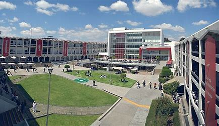

Universidades Disponibles
Benem茅rita Universidad Aut贸noma de Puebla (BUAP)
Descripci贸n: La BUAP es una de las universidades m谩s prestigiosas de Puebla, conocida por su enfoque en la educaci贸n integral de sus estudiantes. Ofrece programas acad茅micos de alta calidad, con una infraestructura moderna y una amplia oferta de becas.
Programas Acad茅micos BUAP
- Medicina
- Enfermer铆a
- Cirug铆a
- Especialidades M茅dicas
Requisitos para ingresar a BUAP
- Examen de admisi贸n
- Certificado de bachillerato
- CURP
- Fotograf铆a tama帽o infantil
- Pago de inscripci贸n
Becas que ofrece BUAP
- Becas acad茅micas
- Becas deportivas
- Becas socioecon贸micas
M谩s informaci贸n sobre BUAP
La Benem茅rita Universidad Aut贸noma de Puebla (BUAP) es una instituci贸n p煤blica que ofrece una excelente formaci贸n acad茅mica en el campo de la medicina. Con una infraestructura moderna y un equipo de docentes altamente capacitados, la BUAP es una de las mejores opciones para estudiar Medicina en Puebla.
Ir al sitio oficial de BUAPUniversidad de las Am茅ricas Puebla (UDLAP)
Descripci贸n: UDLAP es una universidad privada de renombre internacional, conocida por sus programas acad茅micos de excelencia y su enfoque en la innovaci贸n y la investigaci贸n en diversas 谩reas de la medicina.
Programas Acad茅micos UDLAP
- Medicina General
- Psicolog铆a
- Enfermer铆a
Requisitos para ingresar a UDLAP
- Examen de admisi贸n
- Certificado de bachillerato
- Carta de recomendaci贸n
- Entrevista con el comit茅 acad茅mico
Becas que ofrece UDLAP
- Becas de alto rendimiento acad茅mico
- Becas deportivas
- Becas por discapacidad
M谩s informaci贸n sobre UDLAP
La UDLAP es una de las mejores universidades privadas de M茅xico, con un enfoque multidisciplinario que incluye un s贸lido programa de Medicina.
Ir al sitio oficial de UDLAPUniversidad Popular Aut贸noma del Estado de Puebla (UPAEP)
Descripci贸n: UPAEP es una instituci贸n educativa privada en Puebla que se destaca por sus programas de medicina y su enfoque en el desarrollo integral de los estudiantes.
Programas Acad茅micos UPAEP
- Medicina General
- Cirug铆a
- Odontolog铆a
Requisitos para ingresar a UPAEP
- Examen de admisi贸n
- Certificado de bachillerato
- Entrevista personal
- Comprobante de pago de inscripci贸n
Becas que ofrece UPAEP
- Becas acad茅micas
- Becas deportivas
- Becas por desempe帽o
M谩s informaci贸n sobre UPAEP
La UPAEP es conocida por su excelencia acad茅mica en diversas 谩reas, especialmente en medicina, donde cuenta con una de las mejores ofertas educativas de Puebla.
 Ir al sitio oficial de UPAEPUniversidad del Valle de M茅xico (UVM)
Descripci贸n: La UVM es una universidad privada de renombre, con programas educativos de alta calidad, incluyendo su oferta en el 谩rea de la salud.
Programas Acad茅micos UVM
- Medicina General
- Enfermer铆a
- Fisioterapia
Requisitos para ingresar a UVM
- Examen de admisi贸n
- Certificado de bachillerato
- Entrevista de ingreso
- Documentaci贸n personal
Becas que ofrece UVM
- Becas por rendimiento acad茅mico
- Becas deportivas
- Becas de liderazgo
M谩s informaci贸n sobre UVM
UVM es una universidad privada con una s贸lida formaci贸n en ciencias de la salud, destac谩ndose por sus programas en medicina, enfermer铆a y m谩s.
 Ir al sitio oficial de UVM
Ir al sitio oficial de UVM